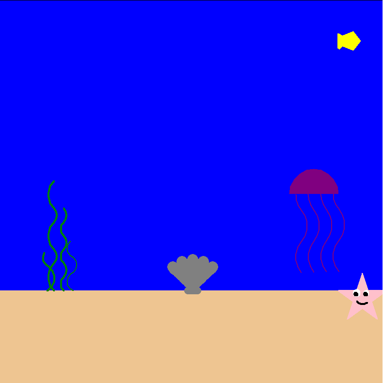

This is my portfolio:
Project 1.1.9 Python Turtle "Draw It Yourself"
Our project designed using Python Turtle, called “Draw It Yourself” guides the user through a series of steps to draw their own image under the sea. The program asks the user specific questions pertaining to each animal or component of the sea and based on their answer, the program follows. For example, the program asks the user if they want a starfish in their program and if they respond with “Yes”, then the following questions would be more detailed, gathering information about the user’s preference of color, size, position of that specific animal. This process repeats for every object in the program, until the program is complete and a picture under the sea is displayed. Each image prompts variety as the user has complete control over specific colors and sizes.
